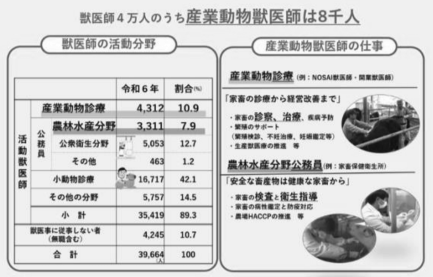
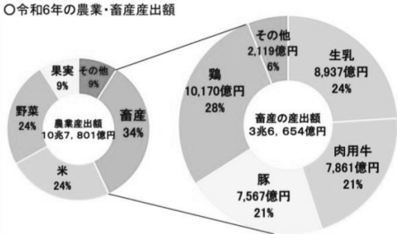
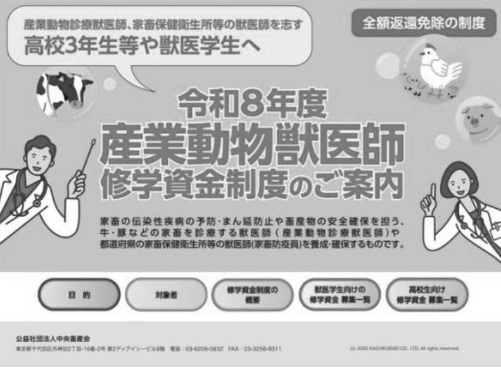

獣医師の
職域偏在について
高校二年 平井 翔
1. はじめに
私は将来獣医師になりたいと考えています。そのため、獣医師について時々調べていたのですが、そこでとある問題が存在する事を知りました。それは獣医師の職域偏在というものです。
2. 職域偏在とその問題
獣医師の分野は大まかに
・犬や猫などのペットを診る小動物診療に従事
する獣医師
・牛や豚を診る産業動物診療に従事する獣医師
・家畜伝染病の予防とまん延防止を担う農林水
産分野の公務員獣医師
の三つに分けられ、後者の二つを合わせて産業動物獣医師と呼ばれています。小動物診療を行う獣医師は全体の 42.1%を占めていますが、産業動物獣医師はたったの 18.8%と分野ごとに人数の偏りが生じています。このような、人員の配分の失敗が職域偏在と呼ばれるものです。

そもそもなぜ職域偏在が問題となるのでしょうか。それは産業動物獣医師の重要性が理由となっています。
畜産物の産出量はここ 10 年で 4 割増加しており、農業産出額の約 3 割を占めています。これに伴い、安心安全な美味しいお肉を食卓に届けるために産業動物獣医師の重要性が年々増しており、不可欠な存在となっています。
そして、産業動物獣医師が不足してしまうと様々な問題が起こってしまいます。鳥インフルエンザなどの有事が起こった際の初動が遅れてしまい、まん延を止めるための最初の一手が鈍ってしまったり、地域によっては畜産業の持続ができなくなってしまう可能性もあります。

3 職域偏在の原因と対策
なぜ職域偏在が起こってしまうのでしょうか。それは産業動物獣医師の待遇に原因があります。産業動物獣医師は広い農地や離島への往診が前提になり、診療所の効率が悪くなり、経営が困難となって来ています。また、行政からの支援も少なく、収入に見合わない業務が増加するので経営が悪化しています。しかし小動物診療を行う獣医師は都市で働くことができ、収入も産業動物獣医師に比べ高待遇になっています。同じ資格を持ちながら働き方も収入の見通しも大きく違っています。これに加え近年のペットブームも重なり、多くの新卒獣医師が小動物診療に流れてしまっています。
しかし、政策も手をこまねいているだけではありません。産業動物獣医師確保のため、修学資金の制度もあります。産業動物獣医師を目指す学生に私立大学で月 18 万円、国公立で月 10 万円を上限に給付されます。そして修学資金給付期間の 3/2倍、または 5/3 倍の期間を就職予定先で従事すれば、修学資金の返済は全額免除されます。

4 まとめ
産業動物獣医師は人間社会の食を支える重要な職業です。職域偏在という問題を解決するためには修学資金の援助だけでは足りません。これからどのような事を行なっていくのかがとても大切になっていきます。私も今までは小動物診療を行う以外の選択肢など考えていませんでしたが、これを機に産業動物獣医師への道も選択肢に入れてみようと思いました。
5 参考資料
農林水産省 https://www.maff.go.jp/j/syouan/tikusui/zyui/250228.html一般社団法人社会構造デザイン機構
https://isvd.or.jp/columns/livestock -veterinarian-occupational -maldistribution
獣医大学ペティ https://jyui.net/what/
日本農業新聞 https://www.agrinews.co.jp/opinion/index/396078
中央畜産会 https://jlia.lin.gr.jp/eisei/syugaku/